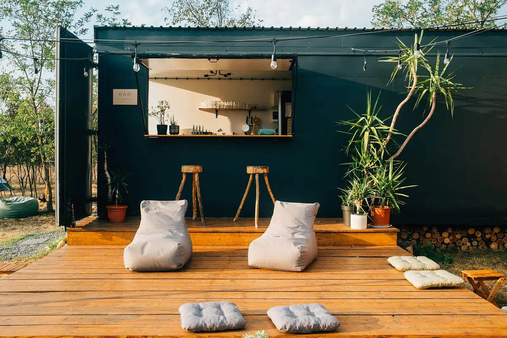
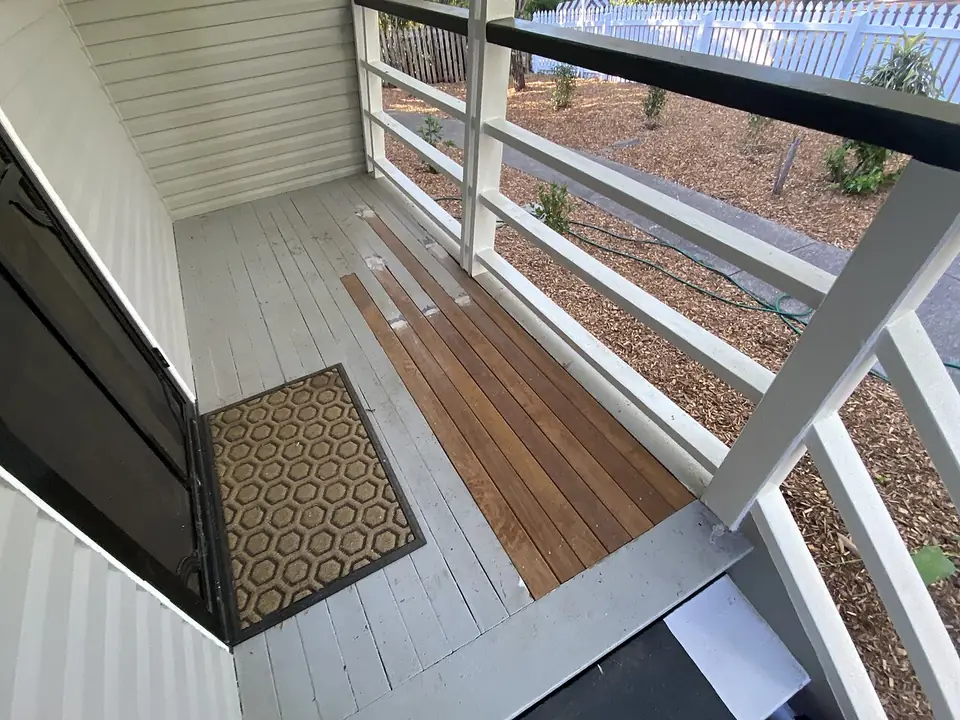

Decking Cornwall · Design • Supply • Install
Decking in Cornwall, built for sea, salt & sunsets.
Kernow Decking Co. designs, supplies and installs composite and hardwood decking, glass balustrades and garden decks across Cornwall, made to handle Atlantic weather and to make the most of every view.
- Free site survey
- Composite & hardwood
- Glass & steel balustrades
- All of Cornwall
Decking installers in Cornwall
Local deck builders who know Cornish weather
Cornwall is one of the most beautiful places in Britain to sit outside, and one of the toughest on outdoor timber. Salt air, driving rain, Atlantic gales and steep gardens all shape how a deck should be designed and built.
We are a Cornish decking company offering design, supply and installation under one roof. Whether you want low-maintenance composite decking, natural hardwood decking, a sea-view terrace with glass balustrades or repairs to an existing deck, we will design it around your home, your garden and your view.
Searching for decking near me? We cover the whole county, from Bude to Penzance.
- Design, supply & installOne team and one clear, itemised price.
- Built for the coastStainless fixings, ventilated sub-frames, grippy boards.
- Sloping gardens sortedRaised and multi-level decks with safe steps.
- Honest adviceComposite or timber? We'll tell you what suits your site.
Decking services in Cornwall
Everything for your deck, from first board to last screw
Garden decking, composite and timber decks, balustrades and repairs, designed and installed by one local team.
Composite decking
Slip-resistant, rot-proof boards that stand up to salt air, rain and Atlantic wind
Find out moreHardwood & timber decking
Natural, durable decks in quality hardwoods and treated softwood, built on solid sub-frames by local deck builders
Find out moreGlass & steel balustrades
Keep the sea view and stay safe with balustrading designed for coastal conditions.
Find out moreDeck repairs & restoration
Rotten boards and joists replaced, unsafe railings fixed, tired decking cleaned and re-oiled
Find out moreDecking design
Design, supply and install.
Find out moreDecking supply
Boards, framing, fixings, lighting and balustrade kits supplied across Cornwall for DIY and trade projects.
Ask for a priceHow we build your deck
Design • Supply • Install
One local team takes your decking project across Cornwall from first sketch to the final screw.
- 01
Design
A free site visit, measurements and a clear decking design with material options and a fixed, itemised quote.
- 02
Supply
We order your composite or timber boards, framing, fixings, balustrades and lighting, delivered when it suits you.
- 03
Install
Solid groundwork and sub-frame, neat boarding and finishing, then aftercare advice and a tidy site.

Why choose Kernow Decking Co.
Decks that stand up to the Atlantic
A deck in Cornwall has to cope with more than sunshine. We build every deck with the local conditions in mind.
- Built for coastal conditions. Marine-grade stainless fixings near the sea, good drainage and ventilation underneath.
- The right boards for your site. Composite for low maintenance, hardwood for natural character, chosen honestly.
- Fixed, itemised quotes. No hidden extras and no pressure.
- Tidy, respectful installers. We look after your home and leave the site clean.
- Holiday-let friendly. We can plan work around your bookings.
- Workmanship guarantee. [GUARANTEE_YEARS]-year guarantee on our installations.
Decking gallery
Decking ideas for Cornish homes
Placeholder images: these will be replaced with real Kernow Decking Co. projects.



Areas we cover
Decking across Cornwall, from Bude to Penzance
Based in [BASE_TOWN], we design and install decking right across the county. Every part of Cornwall has its own challenges, from exposed north-coast clifftops to damp valley gardens, so we have written a guide for each town.
See all areas we coverCustomer reviews
What our decking customers say
Example reviews: replace these with genuine customer reviews before launch.
"[REVIEW 1] Customer review text goes here, e.g. what we built, how the team was and how happy they are with their new deck."
"[REVIEW 2] Customer review text goes here, e.g. what we built, how the team was and how happy they are with their new deck."
"[REVIEW 3] Customer review text goes here, e.g. what we built, how the team was and how happy they are with their new deck."
FAQ
Decking in Cornwall: your questions answered
Can't see your question? Call [PHONE] or send us a message.
How much does decking cost in Cornwall?
Every deck is different. The price depends on size, height, ground conditions, the boards you choose and any balustrading or steps. We offer a free site survey and a fixed, itemised quote so you know exactly what you are paying for.
Composite or hardwood decking: which is better for Cornwall?
Composite decking is very low maintenance, will not rot and copes well with salty coastal air. Hardwood gives a natural look and ages beautifully with care. We talk you through the pros, cons and costs for your site.
Do I need planning permission for decking in Cornwall?
Most ground-level garden decks do not, but decks more than 30cm above ground, decks at listed buildings and some decks in conservation areas may. We will flag anything that needs checking with Cornwall Council before work begins.
How long does it take to install a deck?
A typical garden deck takes a few days to a week. Larger, raised or multi-level decks with glass balustrades take longer. We give you a clear timeline with your quote.
Do you repair existing decks?
Yes. We replace damaged boards and joists, fix loose or unsafe railings, and clean, sand and re-oil tired timber. If a repair is not worthwhile we will tell you honestly.
Can you supply decking materials only?
Yes. We supply decking boards, framing, fixings, lighting and balustrade kits for DIY and trade customers across Cornwall.
Which areas of Cornwall do you cover?
We cover the whole of Cornwall, from Bude and Launceston to Penzance and the Lizard. If you are searching for decking near me anywhere in Cornwall, get in touch with your postcode.